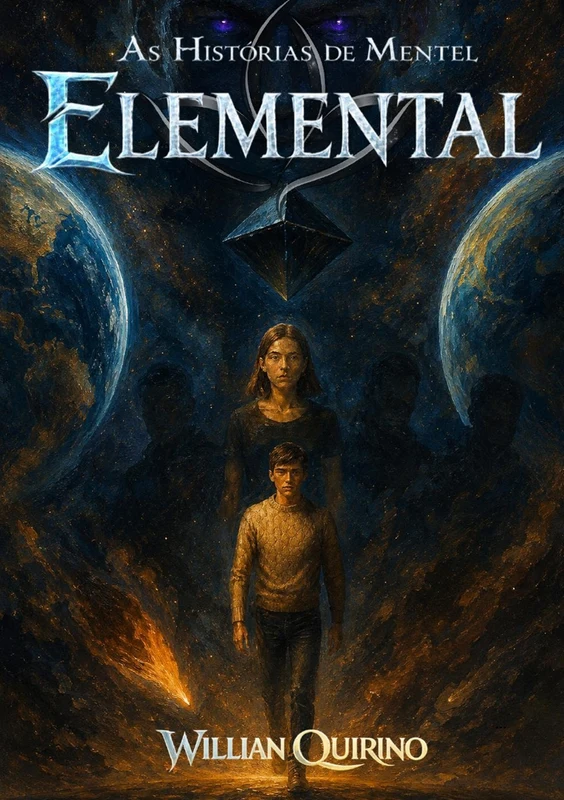
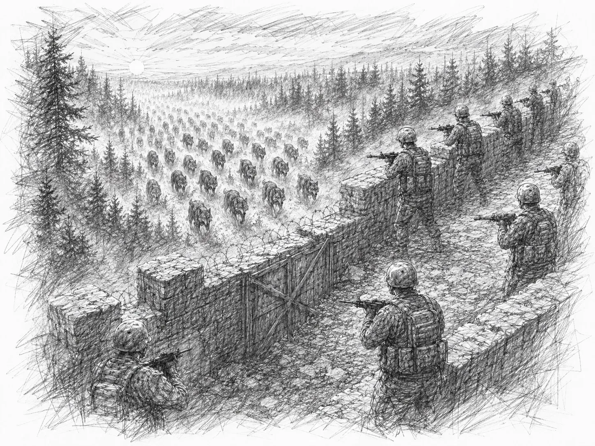
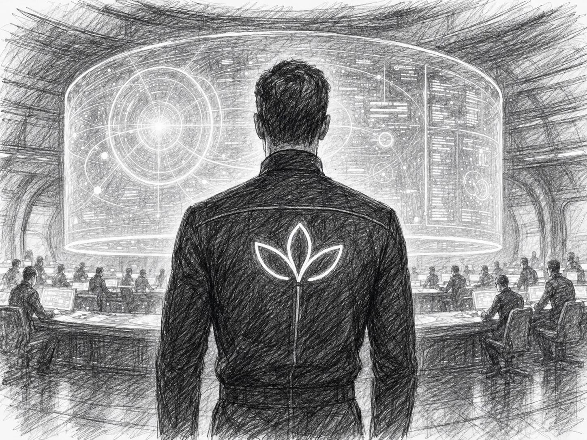
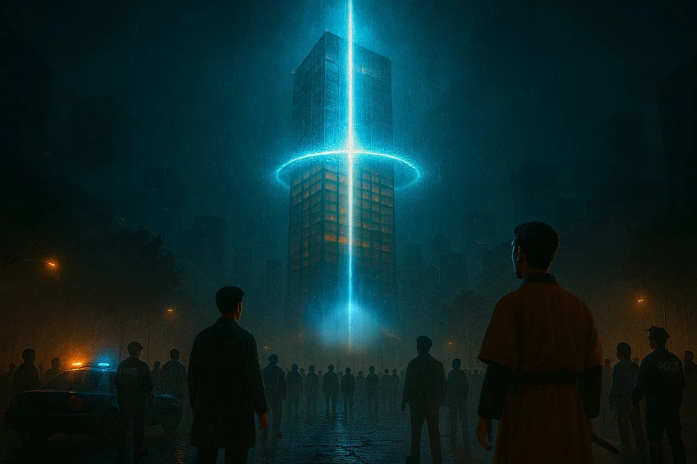

Fantasia sombria · Distopia
A Terra dos Monstros
Quando as muralhas deixam de ser proteção, Melina precisa encarar o que existe na floresta e dentro de si.
Ler o primeiro capítuloO universo literário de Willian Quirino
Ficção científica, fantasia sombria e personagens que descobrem forças maiores do que imaginavam carregar.
Três portas de entrada
Cada livro tem atmosfera própria, mas todos compartilham mistério, descoberta e transformação.
Fantasia sombria · Distopia
Quando as muralhas deixam de ser proteção, Melina precisa encarar o que existe na floresta e dentro de si.
Ler o primeiro capítulo
Ficção científica · Aventura
O último herdeiro de Mendels cai no sertão de Pernambuco enquanto uma guerra atravessa as estrelas.
Ler trechos selecionados
Distopia · Super-humano
Um entregador sem perspectivas aceita uma cura impossível e desperta transformado em algo imprevisível.
Ler o primeiro capítulo
Das Histórias de Mentel
“Eles acreditam que os muros nos protegem. Mas e se estiverem apenas nos trancando aqui dentro?”
Em Avoltera, os sobreviventes se escondem em cidades-fortaleza, separados das criaturas que dominam as florestas. Quando uma fera rompe as defesas de Braen, Melina é empurrada para além de tudo o que conhecia e encontra verdades mais perigosas do que os próprios monstros.

O marco zero das Histórias de Mentel
Uma linhagem perdida. Uma guerra interestelar. Um encontro improvável no sertão.
Após a queda de Mendels, William é lançado ao espaço como o último portador da linhagem Weresp. Sua rota termina na Terra, onde tecnologia alienígena, uma fenda instável e a ajuda de Beyoncé, uma jovem humana, tornam-se sua única chance de escapar do comandante que veio exterminá-lo.

Das Histórias de Mentel
A cura devolveu seus movimentos. O experimento tirou sua antiga humanidade.
Na desigual Belonia, Veter Foxsale é um entregador que abandonou o sonho de explorar as estrelas. Depois de um acidente devastador, uma organização científica oferece uma cura. O procedimento funciona, mas o transforma em uma força que seus criadores já não conseguem controlar.
Mundos para ler e ouvir
Compostas para acompanhar a atmosfera de cada universo, as trilhas expandem a experiência dos livros para além das páginas.
Trilha sonora original
Uma paisagem sonora sombria para atravessar as muralhas de Avoltera.
Trilha sonora original
Tensão, transformação e energia para acompanhar a origem do anti-herói.
Por dentro das histórias
As edições ilustradas transformam momentos-chave da narrativa em cenas que ampliam a experiência de leitura.

A próxima página começa aqui
Conheça as edições impressas e escolha sua próxima leitura na loja oficial.
Visitar a loja UICLAP